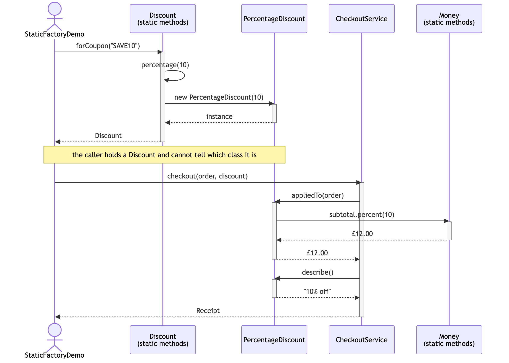

Static Factory Method — UML Sequence Diagram
Shows the runtime flow: a coupon code goes into a static factory method, some object comes out, and the checkout applies it without ever learning what it got.

Notes
- Everything interesting happens above the note. Once
forCouponhas returned, the decision is over — the rest of the diagram is the same regardless of which coupon was used. - Swap
"SAVE10"for"FREESHIP"in the first line and only the third participant changes, toFreeShippingDiscount. Every arrow below the note keeps its shape; only the answers differ —£4.99instead of£12.00,"Free shipping"instead of"10% off". forCouponcallspercentage, which is a second static factory method. Factory methods calling other factory methods is normal and healthy: each one is a named entry point, and they are free to share the work.- Run it with
"BESTDEAL"and the object returned is aBestOfDiscountwrapping two others. The diagram would grow a nestedappliedTocall — and the client's line of code would still be identical. - Now imagine the first three arrows replaced by
new Discount(10). There is nowhere for thepercentage(0) → none()substitution to live, nowhere to return a shared instance, and nothing to stop a caller from constructing a discount the domain does not allow. That absence is what the pattern buys. - Compare with
../../simple-factory-pattern/docs/uml-diagram.md. The shape is nearly the same — but there the creation arrow points at a separatePaymentMethodFactoryparticipant. Here it points back at the product's own type, so there is one fewer class in the world.